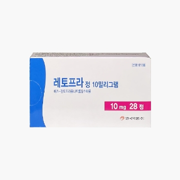
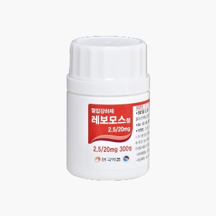
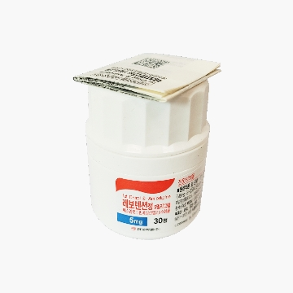
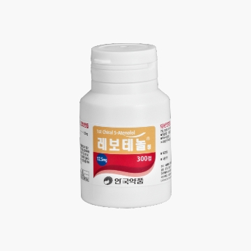
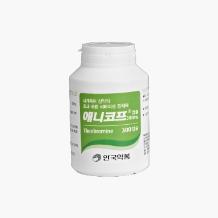
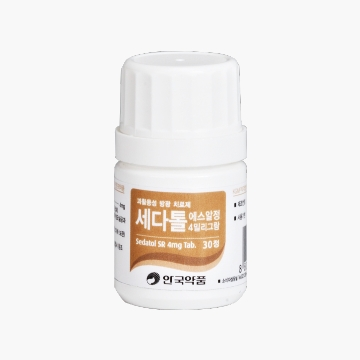
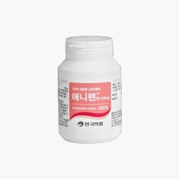
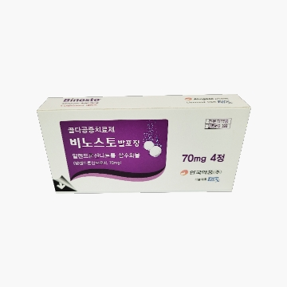
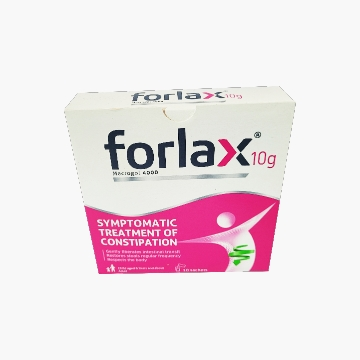

1. The Korea’s first combination drug of S-Amlodipine besylate and Valsartan. 2. Shows a good blood pressure drop effect and reduces side effects caused by complementation of two ingredients. 3. Shows excellent physiochemical stability - No need of separate aluminum packaging, as it does not have properties of absorption.
Indication
Blood Pressure

Retopra Tab. (Korea’s first S-Pantoprazole-only formulation)
Overview
1. Developed as an S-Pantoprazole formulation with proven bioequivalence with Pantoprazole. 2. Shows efficacy equivalent to Pantoprazole at just a half dose.
Indication
Peptic ulcer

Levomos Tab.
Overview
1. It helps to reduce eye dryness and fatigue and increase immunity. 2. Active vitamin B1 and benfotiamine quickly relieve the symptom of fatigue. 3. Antioxidative ingredients such as vitamin C, vitamin E, selenium, and zinc suppress cell damage from oxygen free radicals, a major aging cause.
Indication
Blood Pressure

Levotension Tab. (Korea’s first S-Amlodipine only formulation)
Overview
1. The existing RS-Amlodipine is a combination of S-Amlodipine and R-Amlodipine at a ratio of 50:50. 2. S-Amlodipine is an active ingredient that lowers blood pressure and is 1000 times stronger in calcium channel blocking than R-Amlodipine. 3.Levotension selectively blocks calcium channels using S-Amlodipine, an active ingredient.
Indication
1. Blood pressure 2. Fixed occlusion of the coronary artery 3. Myocardial ischemia caused by spasm and contraction of coronary vascular system
1. Grand prize in the category of technology innovation in the 8th Korea Commodity Awards (May 31, 2008)

Levotenol Tab. (Korea’s first S-Atenolol-only formulation)
Overview
1. Developed as an S-Atenolol formulation with biological equivalence with Atenodol. 2. Demonstrates a blood pressure lowering effect equivalent to or greater than Atenolol in a comparative clinical trial in patients with hypertension. 3. Levotenol showed a blood pressure lowering effect equivalent to or greater than Atenolol just at a half dose.
Indication
1. Blood pressure 2. Angina

Anycough
Overview
1. A new concept of antitussive drug containing cocoa or chocolate extracts Has non-inferior antitussive effect to codeine
Indication
1. Relief of postnasal drip caused by rhinitis, rhinopharyngitis and sinusitis or cough caused by chronic bronchitis
Related Papers
1. The antitussive effect of theobromine, caffeine and reference codeine, on 15% citric acid spray Induced cough model in guinea pig after oral administration (1997) 2. The time dependency of the antitussive effect of theobromine on 15% citric acid spray induced cough Model in guinea pig after oral administration (1997) 3. Testing the antitussive effect of theonromine during chronic treatment on 15% citric acid spray evoked cough model in guinea-pig (1997) 4. The effect of theobromine on the mucociliary clearance activity in rabbits airways(1997)

Sedatol SR Tab. (New paradigm for the treatment of overactive bladder)
Overview
1. A next generation Tolterodine formulation that improves inconvenience of capsule and reduces the size and dose frequency.
Indication
1. Treatment of overactive bladder with symptoms such as uncontrolled urge to pee, or urge to pee more frequently, or urge urinary incontinence
Related Patents
1. Drug composition patent application (10-2006-007059)

Anyfen (100% active anti-inflammatory analgesic)
Overview
1. A 100% bio active anti-inflammatory drug, which is differentiated from Ibuprofen.
Indication
1. Acute and chronic arthritis: Chronic polyarthritis, rheumatoid arthritis, etc 2. Arthrosis 3. Inflammatory rheumatic disease: Ankylosing spondylitis, muscular rheumatism 4. Treatment aid of infectious disease accompanied by inflammation, pain and fever
1. An antitussive/expectorant drug with maximized active synergy from the combination of Western ivy leaf and Oriental goldthread. Ahn-gook’s nature-derived new drug No. 5 with safety and significant antitussive, expectorant, and anti-inflammatory effects.
1. Dual action of antihistamine effect and inhibition of Platelet Activating Factor (PAF) 2. Fast drug effect, extensive and powerful suppression of allergic reactions, and anti-inflammable effect 3. The first antihistamine with proven long-term stability
Indication
Treatment of allergic rhinitis and allergic urticaria
Related Papers
1. Mullol J, et al, Allergy, 2015. 2. Barron et al, Methods Find, Clin, Pharmacol, 2005;27(Suppl.2):161. 3. Rarris et al, Allergy, 2000;55(63):94-95. 4. Stuebner P, et al, Ann Allergy Asthma lmmunol, 2006 Jan;96(1):37-44. 5. Maiti R, et al, Arch Otolaryngol Head Neck Sung, 2010 Aug;136(8):796-800. 6. Maiti R, et al, J Durgs Dematol, 2011 Dec;10(12):1444-50. 7. Valero A, et al, Drugs Saf, 2009:32(1):33-42.
Partner
Uriach (Spain): Marketed in 70 countries since the launch in 2003

Binosto Effervescent Tab.
Overview
1. An effervescent tablet for the treatment of osteoporosis, administered with water. 2. Is more convenient to administer and less irritating to the gastrointestinal tract than the tablet formation.
Indication
Treatment of female osteoporosis after menopause, male osteoporosis
Partner
EffRx (Switzerland): U.S. FDA. Approved by the EMA

Forlax
Overview
A new concept treatment of adult constipation symptoms
Indication
Treatment of adult constipation symptoms
Partner
Beaufor lpsen (France): Had the largest market share in French constipation drug market (2003)